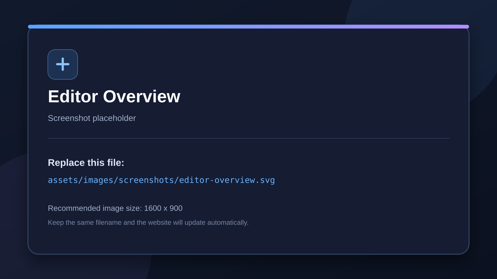

Getting Started
Install the addon and open the Logic Bricks editor.
Installation
-
Copy the
logic_bricksfolder into your project’saddonsfolder. - Open Project → Project Settings → Plugins .
- Enable Logic Bricks .
Opening the editor
Select a supported 3D, 2D, or UI node. Open the Logic Bricks editor from the addon interface, then use Add Logic Brick to add sensors, controllers, and actuators.
